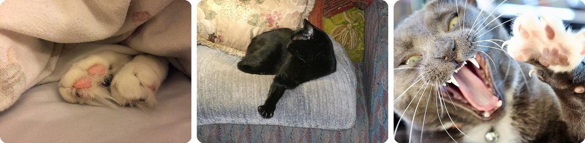
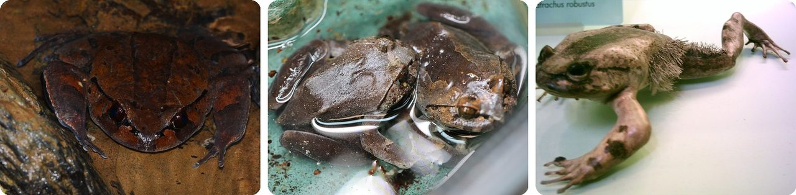
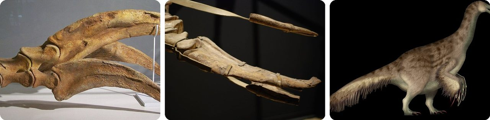

🌍 Top 10 Toenails, Claws and Hooves
Nov 19, 2026
1. 💅 Your toenails grow at half the speed of your fingernails
 Fingernails grow about 3.5 mm a month, but toenails grow only about 1.6 mm, roughly the thickness of a coin. A whole new toenail takes 12 to 18 months to grow out, while a fingernail takes just 3 to 6.
Fingernails grow about 3.5 mm a month, but toenails grow only about 1.6 mm, roughly the thickness of a coin. A whole new toenail takes 12 to 18 months to grow out, while a fingernail takes just 3 to 6.
Nails are made of keratin, the same tough stuff found in claws, hooves and horns. The only living part is hidden under the skin at the base. The nail you can see is layers of dead, packed cells, so cutting it doesn't hurt.
And here's a myth buster: nails don't keep growing after death. The skin dries out and pulls back, so the nails just look longer.
Think of it as a hoof you wear on every toe, just a lot thinner.
2. 〰️ A dent across a toenail can show you were sick months ago
 Sometimes a deep groove runs side to side across a nail. It's called a Beau's line, after the French doctor Joseph Beau, who described it in 1846.
Sometimes a deep groove runs side to side across a nail. It's called a Beau's line, after the French doctor Joseph Beau, who described it in 1846.
Here's how it forms. A bad fever, illness or injury makes the nail's growing area under the skin pause for a while → that part of the nail comes out thinner → a dent forms → the dent slowly rides out toward the tip as the nail grows.
In kids with Kawasaki disease, the lines can show up one to two months after the fever starts. Since a toenail takes a year or more to grow out, the dent can stay visible for a long time.
It's like tree rings, but for the times you were sick.
3. 🐎 A horse's hoof is one giant toenail
 A hoof is the tip of a toe covered by a thick, hard shell of keratin, the same stuff as your nails. A horse has just one hoof on each foot, so it walks around on four single toes.
A hoof is the tip of a toe covered by a thick, hard shell of keratin, the same stuff as your nails. A horse has just one hoof on each foot, so it walks around on four single toes.
Like your nails, hooves never stop growing. Wild horses wear them down about as fast as they grow, by walking on rough ground.
Horses that live with people often don't walk enough on hard, rough ground, or they carry heavy loads on roads. So a farrier (a hoof specialist) trims the hooves and nails on horseshoes to protect them.
Basically, a horseshoe is a phone case for a toenail.
4. 🐈 Cats tuck their claws away to keep them sharp

Almost every member of the cat family has claws that pull back into the paw when they aren't being used. Tucked away, the claws don't scrape the ground, so they stay sharp.Cat claws also grow in layers. Every so often an old outer layer stops growing and gets ready to come off → the cat scratches wood or a scratching post → the old layer peels away and a sharp new one is underneath.
Cats also have a dewclaw high on the inside of their front paws. It never touches the ground, so it gets less wear and tends to be sharper and longer than the rest.
In other words, a scratching post is where cats sharpen their pencils.
5. 🐸 The hairy frog breaks its own toe bones to make claws

The hairy frog lives in Central Africa, in countries like Cameroon. It's also called the horror frog, and for a good reason.When something grabs it, the frog snaps the pointed tip of a toe bone free from the little knob that holds it in place → it pushes those sharp bones out through its own skin → now it has claws. They're made of bone, not keratin, so they aren't real claws.
Scientists think the claws slide back in later while the torn skin heals. The "hair" on breeding males isn't hair either. It's thin strips of skin that may help them take in extra oxygen.
Imagine turning your own fingers into a pocketknife.
6. 🐒 Lemurs have one special "toilet claw" for scratching
 Lemurs, galagos and lorises have flat nails on most of their toes, like we do. But the second toe on each foot has a curved grooming claw, also called a toilet claw.
Lemurs, galagos and lorises have flat nails on most of their toes, like we do. But the second toe on each foot has a curved grooming claw, also called a toilet claw.
They use it to rake through their fur and scratch, mostly around the head and neck, the spots that are hard to reach.
Tarsiers have grooming claws on two toes each, the second and third. Their feet are almost like hands: the big toe can grab like a thumb.
Think of it as a built-in comb on one toe.
7. 🪶 Some birds have a comb on their middle toe
 Birds spread oil on their feathers to keep them in shape, but they can't reach their own head with their beak. So many of them use a foot: they wipe oil from the beak onto a foot, then scratch it into their head feathers.
Birds spread oil on their feathers to keep them in shape, but they can't reach their own head with their beak. So many of them use a foot: they wipe oil from the beak onto a foot, then scratch it into their head feathers.
Herons, nightjars, owls and frigatebirds have a claw on their middle toe with tiny teeth along one edge, like a comb. It's called a pectinate claw, and it may help them comb and oil their head.
Some birds scratch by lifting a leg over a lowered wing, while others reach under the wing, and the method can depend on how the bird lives.
Basically, they style their hair with their toenails.
8. 🐦 Hoatzin chicks have claws on their wings
 The hoatzin is a strange, spiky-crested bird from South America, and the national bird of Guyana. Its chicks are born with two claws on each wing.
The hoatzin is a strange, spiky-crested bird from South America, and the national bird of Guyana. Its chicks are born with two claws on each wing.
They use them to climb. When a hawk attacks, the adults make a fuss to distract it → the chicks scramble away from the nest → if they're found, they drop into the water below, swim under the surface, then use their wing claws and big feet to climb back up.
People once compared this to Archaeopteryx, an early bird with claws on its wings. But scientists now think hoatzin claws are a newer trick for climbing before the chicks can fly.
In other words, the babies climb the tree like a ladder with their arms.
9. 🐜 Giant anteaters walk on their knuckles to save their claws
 The giant anteater of Central and South America has huge claws on its front feet, and the middle claw is the biggest. It uses them to rip open ant and termite nests, then licks the bugs up with a long, sticky tongue.
The giant anteater of Central and South America has huge claws on its front feet, and the middle claw is the biggest. It uses them to rip open ant and termite nests, then licks the bugs up with a long, sticky tongue.
To keep those claws from wearing down, it walks on its front knuckles, a bit like a gorilla or a chimpanzee. The claws stay curled up and off the ground.
The back feet are different: their claws are short, and the anteater walks flat on them.
It's like walking on your fists so you don't scuff your tools.
10. 🦖 A dinosaur had the longest claws of any land animal ever

Therizinosaurus ("scythe lizard") lived in what's now Mongolia about 69 to 66 million years ago. It was a plant-eater up to 10 m (33 ft) long, and its hand claw bones were more than 50 cm (20 in) long, longer than a grown-up's forearm and hand put together.When the first claws were found in the Gobi Desert in 1948, the scientist who named it thought they came from a giant turtle-like reptile that used them to harvest seaweed.
Now experts think it used the claws mostly to pull branches toward its mouth, though its strong arms could also have helped it defend itself.
Picture a pair of garden shears as long as your arm.
Fun fact
The cassowary, a huge flightless bird from Australia and New Guinea, has a dagger-like claw on each inner toe that can be 12.5 cm (5 in) long. It kicks with powerful legs, so it's often called "the world's most dangerous bird," and soldiers in New Guinea during World War II were warned to stay away from it. Yet the records show the ostrich hurts more people, killing two or three a year in South Africa. Which makes you wonder which animals really are the most dangerous, and which just have scary reputations.
Photo credits (Wikimedia Commons)
- #1: Wrinkled Soles & Painted Toenails (flickr) by wrinkledgal, Public domain
- #1: Purple Toenails - May 2011 - Well I Never (flickr) by Gareth1953 All Right Now, CC BY 2.0
- #1: Toes.jpg by unknown, Attribution
- #2: Big-toe-nail.jpg by 些細な日常, CC BY-SA 4.0
- #2: Beau's lines.JPG by LynnMcCleary, CC BY-SA 4.0
- #2: Beau's line on left, middle fingernail.jpg by Elipongo, Public domain
- #3: Hoof bottom view.jpg by Alex brollo, CC BY-SA 4.0
- #3: Equine hoof hc biovision.jpg by Dr. Christoph von Horst, CC BY-SA 3.0
- #3: Farrier Winthrop Washington.jpg by Guywelch2000, CC0
- #4: Cat paws and claws 1 2015-01-16.JPG by FASTILY, CC BY-SA 4.0
- #4: Black cat in repose.jpg by SMPL Reference, CC BY-SA 3.0
- #4: Cat yawn with exposed teeth and claws.jpg by DecafPotato, CC BY-SA 4.0
- #5: Astylosternus robustus · Mayoko, CG-NI, CG by no rights reserved, CC0
- #5: Hairy frog (Trichobatrachus robustus) 1.jpg by Melvin TOULLEC, CC BY-SA 4.0
- #5: Trichobatrachus robustus.JPG by Gustavocarra, CC BY-SA 4.0
- #6: Lemur catta toilet claw.jpg by Alex Dunkel (Maky), CC BY 3.0
- #6: Varecia variegata foot with toilet-claw.jpg by Maky (Alex Dunkel), CC BY 3.0
- #6: Galago moholi 276577285.jpg by i_c_riddell, CC BY 4.0
- #7: Ardea cinerea Putzkralle.jpg by Donkey shot (Christof Bobzin), CC BY 3.0
- #7: Barn Owl Pectinate Claw.jpg by Daniel Polin, CC BY-SA 4.0
- #7: Night Heron pectinate toe by Vedant Kasambe.jpg by Vedant Raju Kasambe, CC BY 4.0
- #8: Hoatzin chick.jpg by J. Arthur Thomson., Public domain
- #8: Opisthocomus hoazin · Careiro - Amazonas, Brasilien by no rights reserved, CC0
- #8: Hoatzin (flickr) by A.Davey, CC BY 2.0
- #9: Giant Anteaters - Brevard Zoo - Flickr - Rusty Clark (5).jpg by Rusty Clark from merritt usland FLA, CC BY 2.0
- #9: Myrmecophaga tridactyla · Minas Gerais, BR by no rights reserved, CC0
- #9: IMG_6346/Brazil/Mato Grosso Do Sul/Pantanal/Giant Antéater/Grand Fourmilier/Tamanoir (flickr) by dany13, CC BY 2.0
- #10: Therizinosaurus claw.jpg by Woudloper, CC BY-SA 3.0
- #10: Therizinosaurus claws lateral.jpg by Frank Black Noir, CC BY 2.0
- #10: Therizinosaurus TD.png by TotalDino, CC BY 4.0


_1.jpg){kind=link}


.jpg){kind=link}